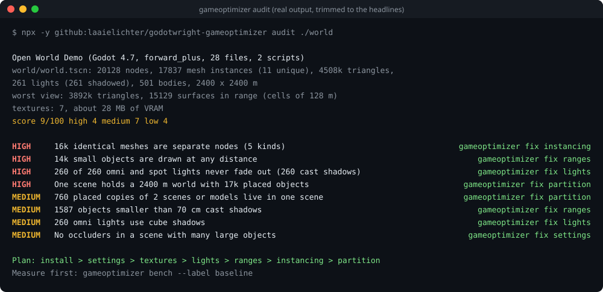
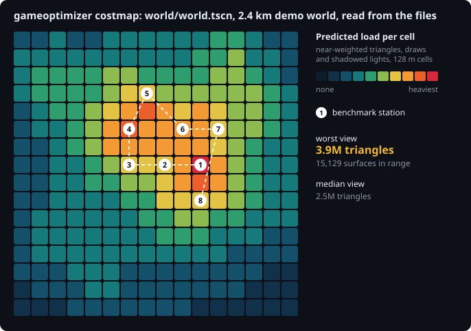
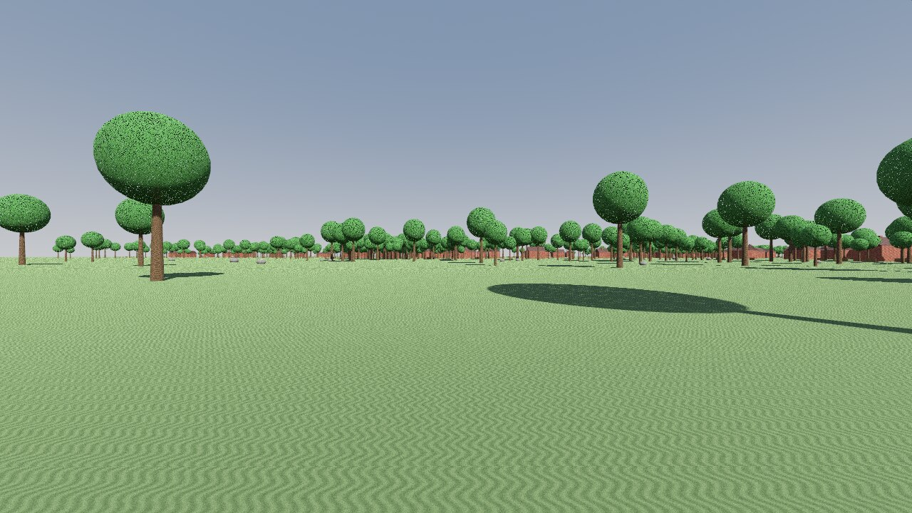
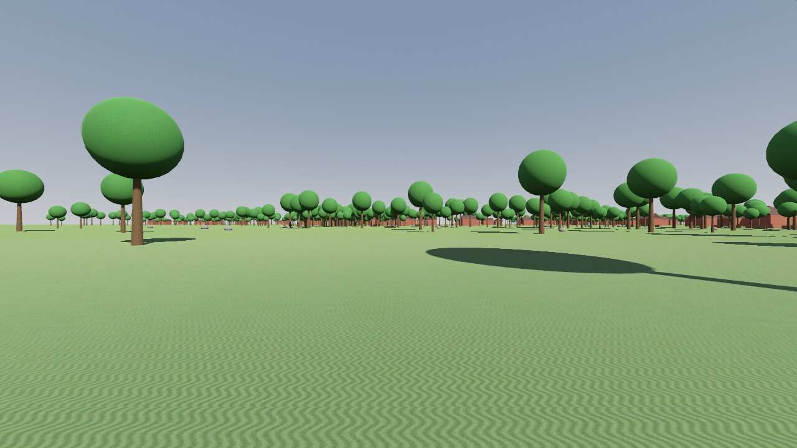

One command, a ranked list of problems
The audit reads scenes, models, textures, import files, project settings, scripts and shaders. It needs no Godot and took under a second on this 20 000-node demo world. Every finding names its fix.

Real output on gameoptimizer demo, trimmed to the headlines. The full report gives evidence per finding.
How it works
The agent works in a loop: read, measure, change one thing, measure again, keep it or undo it.
Read the project
Findings with evidence and a plan of fixes in order. No Godot needed.
Measure a baseline
Frame times, hitches, draw calls, memory and a screenshot per station, on a route through the predicted hotspots.
Change one thing
Settings, textures, lights, visibility ranges, instancing, world streaming. Dry run first if you like.
Keep it or undo it
Better, same or worse, and whether the picture changed. undo restores every byte.
Where is it slow? Ask the map.
You normally find out by flying around. The world cost map predicts triangles, draw calls and shadowed lights per cell from the files, finds the hotspots and writes a benchmark route through them.
- Cells of 128 m, weighted by what is in view
- Hotspots become benchmark stations
- The same route is flown before and after every fix

Measured, not promised
Every number here comes from bench and compare on the demo world. The machine is a 4-core container without a GPU: rendering is Mesa's software Vulkan driver (llvmpipe), so milliseconds only compare with each other. Counts and memory are exact.
Before and after: station 2 of a 900 m world
The safe steps only (install settings textures lights ranges), 1280x720, Godot 4.7.2, flown on 28 November 2026. Drag the bar.


BeforeAfter| Over all 8 stations | Before | After | Change |
|---|---|---|---|
| Draw calls (avg) | 133 | 111 | -16% |
| Objects drawn (avg) | 3 804 | 3 205 | -16% |
| Texture memory (max) | 200 MB | 177 MB | -11% |
| Video memory (max) | 221 MB | 202 MB | -8% |
| Frame time p50 (software renderer) | 629 ms | 672 ms | +7% |
The tool called this run a regression, and it was right. On the software renderer the frame time went up. We have not isolated the cause; texture filtering (mipmaps plus 16x anisotropic), which a CPU rasterizer pays for in full, is the likely suspect. The picture changed on purpose: mipmaps end the moire on the ground and in the leaves. On a GPU, measure again and keep what wins there.
The 2.4 km world, 19 371 nodes, flown through headless
| Before | After install, settings, textures, lights, ranges, partition | |
|---|---|---|
| Frame time p50 (CPU side) | 8.19 ms | 1.31 ms |
| Frame time p99 | 19.66 ms | 5.31 ms |
| Hitches during the flight | 66 | 5 |
| Nodes in the tree (max) | 19 371 | 7 877 |
| Static memory | 91 MB | 85 MB |
Not everything wins. Merging identical meshes into MultiMeshes removed nodes but cost 13% more frame time on the software renderer, so the comparison flagged it and it was undone. That is why the tool measures, and why instancing is marked optional. Measure on your own target hardware and keep what wins there.
What Godot 4 leaves to you
Godot renders beautifully, but a large world runs into the same walls every time.
No world streaming
partition cuts a world into chunk scenes; GOStreamer loads them around the camera on a thread, within a per-frame budget.
No HLOD
Every chunk gets a stand-in scene: one MultiMesh per mesh, drawn while the chunk is not loaded, so the skyline stays.
Only a far plane
ranges sizes a visibility range from each object's own size on screen and takes tiny objects out of the shadow passes.
No texture streaming
textures sets VRAM compression and mipmaps for 3D textures: 4 to 8 times less GPU memory.
No dynamic resolution
GOQuality has five tiers (low to cinematic); GOGovernor holds a target frame rate by moving the resolution scale.
Shader compile stutter
GOPrewarm draws every material once behind the loading screen; the probe counts pipeline compilations per frame.
Lights that never switch off
lights sets a distance fade from each light's range; optional dual-paraboloid shadows.
Worlds built from code
The live census runs the game, counts the real tree and names the script that built each node. GOWorldPolicy culls it at run time.
Add it to your agent
The server speaks MCP over stdio. One command, no install step. Measuring needs Godot 4 (pass godot or set GODOT); the audit, the cost map and every fix work without it.
claude mcp add gameoptimizer -- npx -y github:laaielichter/godotwright-gameoptimizer mcp
# ~/.codex/config.toml [mcp_servers.gameoptimizer] command = "npx" args = ["-y", "github:laaielichter/godotwright-gameoptimizer", "mcp"]
{
"mcpServers": {
"gameoptimizer": {
"command": "npx",
"args": ["-y", "github:laaielichter/godotwright-gameoptimizer", "mcp"]
}
}
}
npx -y github:laaielichter/godotwright-gameoptimizer demo ./world # a heavy open world to try it on npx -y github:laaielichter/godotwright-gameoptimizer audit ./world npx -y github:laaielichter/godotwright-gameoptimizer fix ranges ./world --scene world/world.tscn --dry-run
On Windows, if npx does not start from the client: "command": "cmd", "args": ["/c", "npx", "-y", ...].
Use it with Godotwright
Godotwright is the coding toolkit for Godot agents: the real Godot 4.7 API offline, a scored review of every script that catches Godot 3 habits, scenes that merge in git, and bisect to find the commit that broke it.
Godotwright makes sure what the agent writes is right. The Game Optimizer makes sure it runs well. Both are MCP servers, so one agent uses both: review until the scripts are clean, then audit, measure, fix and compare.
claude mcp add godotwright -- npx -y godotwright mcp claude mcp add gameoptimizer -- npx -y github:laaielichter/godotwright-gameoptimizer mcp
Tools
Every tool is both an MCP tool and a CLI command with --json.
| Tool | CLI | What it does |
|---|---|---|
optimizer_audit | audit | Findings with evidence and the plan. |
optimizer_costmap | costmap | Predicted cost per world cell, hotspots, a benchmark route. |
optimizer_census | census | Runs a scene (or a .pck), counts the live tree, names the script that built it. |
optimizer_textures | textures | GPU memory per texture, largest first. |
optimizer_fix | fix <name> | install, policy, settings, textures, lods, lights, ranges, instancing, partition. |
optimizer_undo | undo | Takes a fix back; restores every byte. |
optimizer_bench | bench | Percentiles, hitches with cause, monitors, screenshots. |
optimizer_compare | compare | Per metric, per station, per screenshot. Exit code 1 on a regression. |
optimizer_import | import | Godot's import, also on machines without a GPU. |
optimizer_explain | explain | Why a finding costs performance and how the fix works. |
optimizer_demo | demo | Writes the heavy open-world demo project. |
Limits
- The audit reads text scenes and resources (
.tscn,.tres) and glTF. Binary.scnand.resare counted but not opened. - A world built entirely from code has no scene to partition:
censusandfix policyhelp, the rest is a change in that code. - Occluders are not baked for you; the audit says when they are missing.
- Without a GPU, frame times come from a software renderer and only compare with each other.